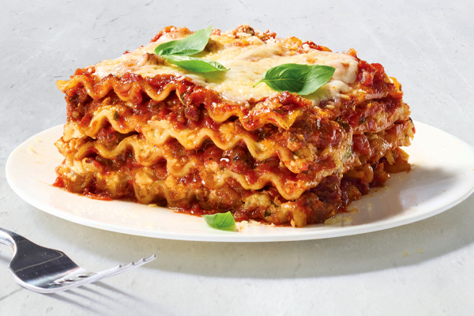

Homemade lasagna that is sure to please the family!
Preparation is key, so look below and make sure you are prepared
The perfect dish to pair with a cold snowy evening with the family. Layered with delicous cheese and meats, this lasagna will be sure to have your friends and family fighting over a second plate
Now that we have set aside enough time to create, lets get down to it!
Making the dish is shouldnt be to difficult, below if a brief overview, more detailed instructions will be listed below
Add onion and cook until translucent. Stir in tomato products, half of your parsley, garlic, basil, 1.5 teaspoons of salt, oregano, and sugar
Preheat oven to 375F. This dish should take a total bake time of about 50 minutes. 30-40 minutes covered, 5-10 minutes uncovered
Combine pork and ground beef in a large, deep skillet over medium-high heat; cook and stir until browned and crumbly (5-7min)
Add onion and cook until translucent (about 5 min)
Stir in crushed tomatoes, tomato sauce, 1 tablespoon of fresh parsley, garlic, basil, salt, oregano and sugar
Reduce heat to medium-low and simmer, stirring occasionally for 30 minutes.
While the sauce is simmering bring a large pot of lightly salted water to boil. Cook lasagne noodles in the boiled water
stirring occasionally, until tender yet firm to the bite, 8-10 minutes. Drain and set aside.
While the noodles are cooking, preheat the oven to 375F
Mix cottage cheese, Parmesan cheese, eggs, and remaining parsley, salt, and pepper in a large bowl until combined
Assemble Lasagna: Spread a spoon or two of sauce over the bottom of the 9x13 baking dish just to coat it. Place two layers of noodles
over the sauce to cover. Layer with 1/2 of the cheese mixture, 1/2 of the remaining sauce and 1/2 of the mozzarella cheese.
Repeat layers once more using remaining noodles, cheese mixture, sauce, and mozzarella. Cover dish with aluminum foil
Bake in preheated oven for 30 to 40 minutes. Remove the foil and bake until cheese is golden brown (about 5-10min)
Remove from oven and let stand four 10 minutes before cutting and serving